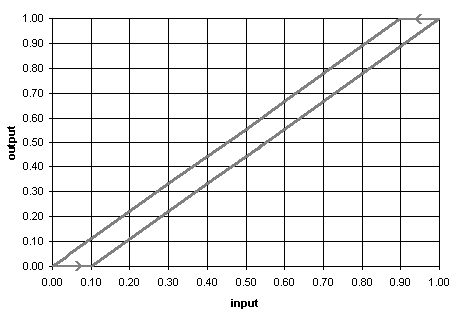

There are a number of control element types that you can associate with an undefined control node. Detailed descriptions and properties of these control elements are provided in the following sections.
Sensor
There are two types of sensors that can be created depending on the type of icon with which the sensor is associated: Zone or Junction Sensor and Path or Duct Sensor. The Sensor definition dialog box will provide you with the properties available for the type of sensor being created.
Sensed Value: Select the property of the zone or junction that you would like the sensor to provide as output: Temperature, Contaminant mass fraction, Gage pressure or Occupancy.
Sensed Value: Select the property of the path or duct that you would like the sensor to provide as output: Flow rate through the path or Pressure drop across the path.
Sensor Output: Sensor output defaults to the base units of CONTAM, but you can modify this by changing the Gain and Offset values provided. However, the Report a Value control element (described below) automatically provides values to convert from the base units to the default units of your project or of the particular contaminant which you are sensing.
Out = (Sensor Challenge Value – Offset) * Gain
Gain: a multiplier used to convert the Sensor Challenge Value to the Out value
Offset: an offset value used to convert the Sensed Value to the Output value
Time Constant: sensor response time constant in units of seconds. ContamX will use this to calculate a delay factor.
Delay = e-Dt/t
The sensor output is calculated from the converted Sensor Challenge Value for the current time step t (Out), the output from the previous time step t-Dt, and the Delay value as follows:
Output(t) = Out + [Output(t-Dt) – Out] * Delay
Location: These parameters only apply to Mass fraction sensors associated with 1D zones. Select whether you want the sensor to provide the Zone Average concentration of a 1D zone or the value within a single 1D Cell of a 1D zone. The 1D cell option is only effective when performing a simulation using the short time step method otherwise the sensor will provide a value based on the zone average.
X, Y and Rel Elevation (Z) are the coordinates and units for the selected sensor. X and Y are absolute coordinates and Rel Elevation is relative to the level on which the sensor is located. These values are required for any sensor that is located within a cell of a 1D convection/diffusion zone (see 1D Zone Data). If the sensor is to be located within a particular cell of a 1D zone, then these coordinates will be verified by ContamW against the axis of the 1D zone in which it is located. This verification will be performed automatically when you select either the Run Simulation or Create a ContamX Input File command from the Simulation menu.
Description: Use this to describe the sensor in detail. This description will be displayed in the status bar when you highlight the sensor icon. The description defaults to either "zone sensor" or "path sensor."
Phantom control
Use this control element to reference a named control element that already exists elsewhere within your project. Phantom nodes are useful when you need a control signal from a node that is located remotely upon the SketchPad or when you are implementing one of the multiple-input elements. This is useful in referencing a node on another level of a building, because ContamW does not allow you to draw links between building levels. This can also be used to "cascade" inputs into the multiple-input sum and average controls when you want to sum or average more than three inputs or remotely located, named inputs.
Schedule
Use this control element to apply a schedule via the control network. A schedule can be applied to airflow paths, simple air handling systems, inlets and outlets of simple air handling systems and source/sinks. Control schedules will override schedules that are defined as a parameter of an element. You can select an existing schedule or create a new one (See Creating Schedules).
Constant
Use this control element to define a simple constant. The constant is useful as input to other control elements such as the mathematical, limit and switch controls.
Modifier
Use this control element to modify an input signal by providing a Gain and Offset parameter. The input signal will be modified according to the following equation.
output = (input – Offset) * Gain
The parameters for the Modifier control are:
Gain: a multiplier used to convert the input signal
Offset: an offset value used to convert the input signal
Hysteresis
Use this control element to simulate hysteresis of a control actuator. Hysteresis is characterized by the Slack parameter where Slack is the fraction of the input signal’s range over which the output signal remains constant when the input signal changes direction. The relationship of the output signal to the input signal is shown in the following figure. This plot shows the signal increasing from 0 to 1 and back down to 0 again. The increasing and decreasing signals are characterized by the following equations, respectively.
Increasing: output = maximum( 0.0, input * Slope + Int )
Decreasing: output = minimum( 1.0, input * Slope )
Where
Slope = 1 / (1.0 – Slack)
Int = output – Slope * input

Figure – Plot showing hysteresis curve of Hysteresis control element
Use this control element to report values to a file created by ContamW for the specific purpose of logging these reported values for each listing time step of a transient simulation (See Output Properties). If you perform a transient simulation and implement report control elements, ContamW will create a file in the same directory as your project file with the name of your project file and the .LOG extension appended. For example if your project is MyProj.PRJ, ContamW will create the file MyProj.LOG. You can also use the Report control element to provide automatic unit conversions of sensor data from the dimensionless units of a sensor (e.g. K or kg/kg) to engineering units associated with the type of sensed data (e.g. ºC or ppm(v)).
The value output from the report element will be determined according to the following equation:
output = ( input – Offset ) * Gain
The parameters for the Report control are:
Gain: a multiplier used to convert the input signal
Offset: an offset value used to convert the input signal
Header: the header that will appear in the log file for this control element
Units: units that will appear below the header in the log file for this control element
The report control will also provide the default conversion values, Gain, Offset and Units if ContamW finds a sensor "down-link" in the control network that has not yet been converted from its dimensionless form.
Signal split
Use this to split a signal, so the same signal can be linked directly to multiple nodes in the control network.
Logical
Use these controls to provide logical operations including:
Binary – convert input signal to binary 0 or 1,
NOT – negate single input value and provide binary output 0 or 1,
AND – perform AND operation on two input values and provide binary output 0 or 1.
output = 1 IF (input1 > 0) AND (input2 > 0)
output = 0 otherwise
OR – perform OR operation on two input values and provide binary output 0 or 1.
output = 1 IF (input1 > 0) OR (input2 > 0)
output = 0 otherwise
XOR – perform XOR operation on two input values and provide binary output 0 or 1.
output = 1 IF (input1 > 0) AND (input2 <= 0)
output = 1 IF (input2 > 0) AND (input1 <= 0)
output = 0 otherwise
Mathematical
Use these controls to provide mathematical operations including:
Absolute value – provide absolute value of input signal
Add, Subtract, Multiply, and Divide – perform operation on two input signals and provide result as output.
Note the order of operation is important for Subtract and Divide.
Subtract: output = input1 – input2
Divide: output = input1 / input2
Sum and Average – Sum or average multiple input signals and provide result as output signal. Three signals can be directly input to using links drawn into the control node icon, and more can be cascaded through the use of phantom nodes.
EXP(x) – raise e to the power of x.
LN(x) – calculate natural logarithm of x.
LOG10(x) – calculate log base 10 of x.
POW(x,y) – raise x to the power of y where x is input1 and y is input2.
SQRT(x) – calculate the square root of x.
Polynomial(x) – calculate polynomial of x based on user-defined polynomial coefficients.
SIN(x) – calculate sine of x.
COS(x) – calculate cosine of x.
TAN(x) – calculate tangent of x.
MOD(x,y) – calculate the floating-point remainder of x divided by y where x is input1 and y is input2.
CEIL(x) – calculate the smallest integer that is greater than or equal to x.
FLOOR(x) – calculate the largest integer that is less than or equal to x.
Limit switches
Limit switches provide the ability to set an output signal to either on or off (0 or 1) based upon the difference between the two input signals.
Lower limit switch
output = 1 IF ( input1 < Limit ) [Limit = input2]
output = 0 otherwise.
Upper limit switch
output = 1 IF ( input1 > Limit ) [Limit = input2]
output = 0 otherwise
The band switches incorporate the control parameter, Band width, to provide a dead band for the on/off control.
Lower band switch
output = 1 when input1 rises above input2 + Band width
output = 0 when input1 < input2
input2 is the lower limit of the band
Upper band switch
output = 1 when input1 falls below input2 – Band width
output = 0 when input1 > input2
input2 is the upper limit of the band
Limit controls
Limit controls provide the ability to set an output signal to a value ranging from 0.0 to 1.0 based upon the difference between the two input signals. These would typically be used to provide an error signal to a proportional controller.
Lower limit control
output = input2 - input1
Upper limit control
output = input1 - input2
The upper and lower limit controls can be used to prepare an error signal for the proportional controls. If the input signal to an upper limit control is greater than the limit value, a positive output results; e.g., if a contaminant concentration is too high, the positive signal could activate an airflow device. If the input signal to a lower limit control is lower than the limit value, a positive output results; e.g., if the air flow through an opening is too low, a positive signal could activate a fan to provide the required flow.
Proportional and Proportional–Integral
Proportional control – This is a model of a simple proportional controller where the input signal is an error signal that is typically a sensed value minus a set-point value which is obtained by using other control functions, e.g. the constant control. The input signal is multiplied by the proportionality constant parameter of the control, Kp. The output signal is limited to values between 0 and 1, so you should set the proportionality constant accordingly. The output signal could then be modified as required using other control elements.
output = input × Kp
Proportional-Integral control – This is a model of a simple P-I controller where the input signal is an error signal. The output signal is limited to values between 0 and 1 and is modified by the control parameters Kp and Ki according to the following equation.
output = output* + Kp × (input - input*) + Ki × (input + input*)
where output* and input* are the values of output and input at the previous time step. The Kp and Ki factors must be tuned for the specific problem and time step. This is similar to an "incremental" P-I algorithm described in equations (17-37) and (18-3) of [Stoecker and Stoecker 1989].
Scheduled Delay
This control element provides the ability to simulate time delays associated with the ramping up/down of system components changing between states, e.g., the spin down of a fan or the opening/closing of a damper. The scheduled delay element allows you to define a schedule according to which the change of state occurs. The output will change according to this schedule when the input changes.
Node Name: This is an optional name you can provide for this control node. This name can be used to reference this node with a Phantom control node.
Schedule - Signal Increasing: Select/enter a day schedule that characterizes the delay in an increasing signal. The schedule must be trapezoidal beginning with a value of 0.0 at time 00:00:00 and increase to a value of 1.0 before 24:00:00. Only one increasing time period per schedule will be allowed.
Schedule - Signal Decreasing: Select/enter a day schedule that characterizes the delay in a decreasing signal. The schedule must be trapezoidal beginning with a value of 1.0 at time 00:00:00 and decrease to a value of 0.0 before 24:00:00. Only one decreasing time period per schedule will be allowed.
Description: Enter an optional description for this control element.
Exponential Delay
This control element provides the ability to simulate time delays associated with the ramping up/down of system components changing between states, e.g., the spin down of a fan or the opening/closing of a damper. The exponential delay element allows you to define an exponential delay based on a time constant.
Node Name: This is an optional name you can provide for this control node. This name can be used to reference this node with a Phantom control node.
Time Constants:
Increase: Enter the amount of time it should take for the output signal to exponentially increase by (1 – 1/e) % of the total change in the input signal when it rises from one state to the next. The format is hh:mm:ss.
Decrease: Enter the amount of time it should take for the output signal to exponentially decrease by (1 – 1/e) % of the total change in the input signal when it falls from one state to the next. The format is hh:mm:ss.
NOTE: An amount of time of about 4.6 times the value entered above is required for the output signal to increase/decrease by 99 % of the total change in the input signal.
Description: Enter an optional description for this control element.
Maximum and Minimum
The output will be the maximum or minimum of all input signals to the control node each time step. Once a node is defined to be of this type, up to three input signals can be drawn directly into it. More signals can be cascaded through the use of phantom control elements.
Node Name: This is an optional name you can provide for this control node. This name can be used to reference this node with a Phantom control node.
Description: Enter an optional description for this control element.
Integrate over time
The output will be the integration over time of input signal 1 (horizontal) controlled by input signal 2 (vertical). Integration occurs when input signal 2 > 0; there is no integration when input signal 2 = 0; the integral is reinitialized to zero when input signal 2 < 0. A simple trapezoidal integration method is used.
Running average
The output will be the average of the input signal integrated over the Time Span, Dtint:
out = ∫in dt / Dtint
At the start of simulation, when the simulated time is less than the time span, the output will be the average of the input up to that time.
Node Name: This is an optional name you can provide for this control node. This name can be used to reference this node with a Phantom control node.
Time Span: Enter the amount of time included in the running average, Dtint. The format is hh:mm:ss.
Description: Enter an optional description for this control element.
Continuous Value File and Discrete Value File (CVF/DVF)
These control elements allow you to implement general schedules by obtaining input values from a file. This allows you to create schedules that are not restricted by the 12-day schedule limit of CONTAM week schedules. These are text files that you create according to the format specified in the CVF Format and DVF Format sections of this document. You can only use one of each file per simulation, but the file may contain multiple lists of values. Value lists are referenced by Value name, which are column headings in the files.
CVF and DVF files differ not only in format but also in behavior. During a simulation, CONTAM will interpolate between the CVF values but not so for DVF values, i.e., they will remain constant until a new value is encountered within the file.
Beginning with CONTAM version 3.2, these files can now be utilized without the use of an associated control node/network, i.e., building components that may be associated with a schedule can do so by directly associating them with a value name of a CVF/DVF file. This is now apparent in the Schedule properties of each component within ContamW.
Value Name: Select the name of a set of values from the list of headings as they appear in the CVF/DVF file.
File Name: This field displays the CVF/DVF file that contains the data that will be used by the control node during simulation. You must use the Data®Controls®Continuous Values File… and Data®Controls®Discrete Values File… menu items to select the files you want to use prior to creating the CVF/DVF control nodes.
Node Name: This is an optional name you can provide for this control node. This name can be used to reference this node with a Phantom control node.